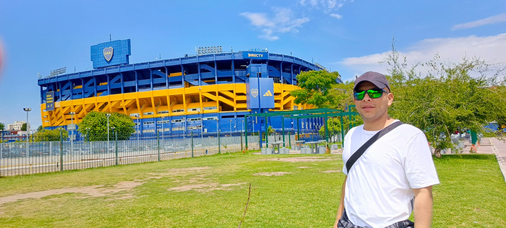

WARRIORS F.C.
Unidos por la Amistad, Invencibles en el Campo

WARRIORS F.C.
Unidos por la Amistad, Invencibles en el Campo
WARRIORS F.C.
"Hijo, cuando participas en eventos deportivos no importa quién gane o pierda, sino cuán ebrio te pongas"
Homero Simpson